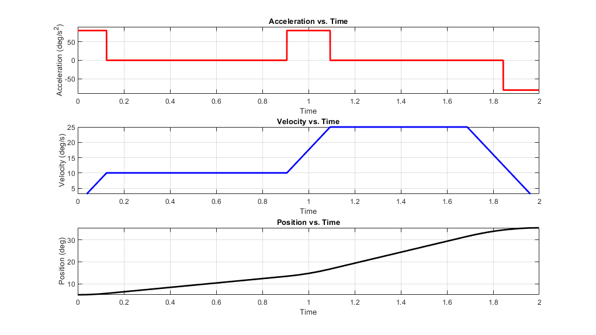

Homework 4, Problem 1
Code by Michael White
clear; clc; close all; % Setup initial parameters theta1 = 5; %degrees theta2 = 15; %degrees theta3 = 40; %degrees td12 = 1; %seconds td23 = 1; %seconds theta_dd = 80; %degrees/second^2 % Calculate theta12_d and theta23_d theta12_d = (theta2-theta1)/td12; theta23_d = (theta3-theta2)/td23; % Calculate times 1,2,3 t1 = theta12_d/theta_dd; t2 = (theta23_d-theta12_d)/theta_dd; t3 = theta23_d/theta_dd; % Display these values disp('Theta12_d ='); disp(theta12_d); disp('Theta23_d ='); disp(theta23_d); disp('t1 ='); disp(t1); disp('t2 ='); disp(t2); disp('t3 ='); disp(t3); % Generate functions for plots syms t; fx.acceleration = piecewise(... t < t1, theta_dd,... t1 < t < (td12-0.5*t2), 0,... (td12-0.5*t2) < t < (td12+0.5*t2), theta_dd,... (td12+0.5*t2) < t < (td12+td23-0.5*t3), 0,... (td12+td23-0.5*t3) < t < (td12+td23), -theta_dd); fx.velocity = piecewise(... t < t1, theta_dd*t,... t1 < t < (td12-0.5*t2), theta12_d,... (td12-0.5*t2) < t < (td12+0.5*t2), theta12_d+theta_dd*(t-(td12-0.5*t2)),... (td12+0.5*t2) < t < (td12+td23-t3), theta23_d,... (td12+td23-t3) < t < (td12+td23), theta23_d-theta_dd*(t-(td12+td23-t3))); fx.position = piecewise(... t < t1, theta1+0.5*theta_dd*t^2,... t1 < t < (td12-0.5*t2), 5.6250+theta12_d*(t-t1),... (td12-0.5*t2) < t < (td12+0.5*t2), 13.4375+theta12_d*(t-(td12-0.5*t2))+0.5*theta_dd*(t-(td12-0.5*t2))^2,... (td12+0.5*t2) < t < (td12+td23-t3), 16.7188+theta23_d*(t-(td12+0.5*t2)),... (td12+td23-t3) < t < (td12+td23), 31.5626+theta23_d*(t-(td12+td23-t3))-0.5*theta_dd*(t-(td12+td23-t3))^2); % Generate figures for position, velocity, and acceleration figure; hold on; set(gcf,'Position',[1 1 1020 575]); grid on; % Acceleration subplot(3,1,1); fplot(fx.acceleration,'-r','LineWidth',2); grid on; xlim([0,td12+td23]); ylim([-theta_dd-10,theta_dd+10]); title('Acceleration vs. Time'); xlabel('Time'); ylabel('Acceleration (deg/s^2)'); % Velocity subplot(3,1,2); fplot(fx.velocity,'-b','LineWidth',2); grid on; xlim([0,td12+td23]); title('Velocity vs. Time'); xlabel('Time'); ylabel('Velocity (deg/s)'); % Position subplot(3,1,3); fplot(fx.position,'-k','LineWidth',2); grid on; xlim([0,td12+td23]); title('Position vs. Time'); xlabel('Time'); ylabel('Position (deg)');
Theta12_d =
10
Theta23_d =
25
t1 =
0.1250
t2 =
0.1875
t3 =
0.3125
